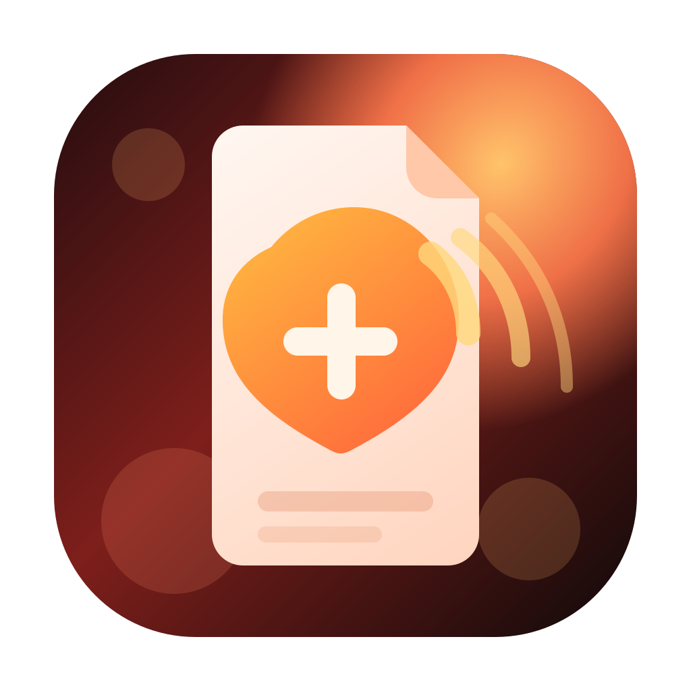
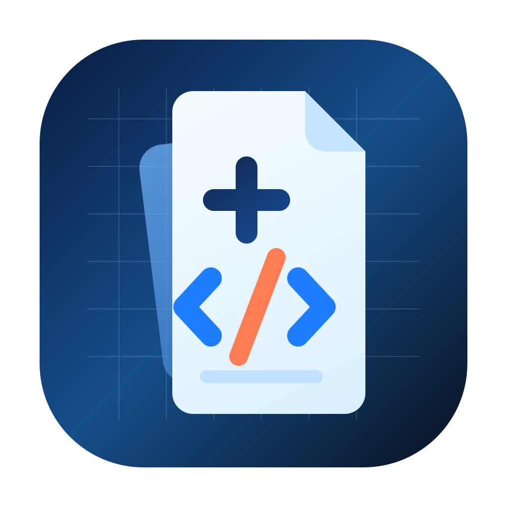
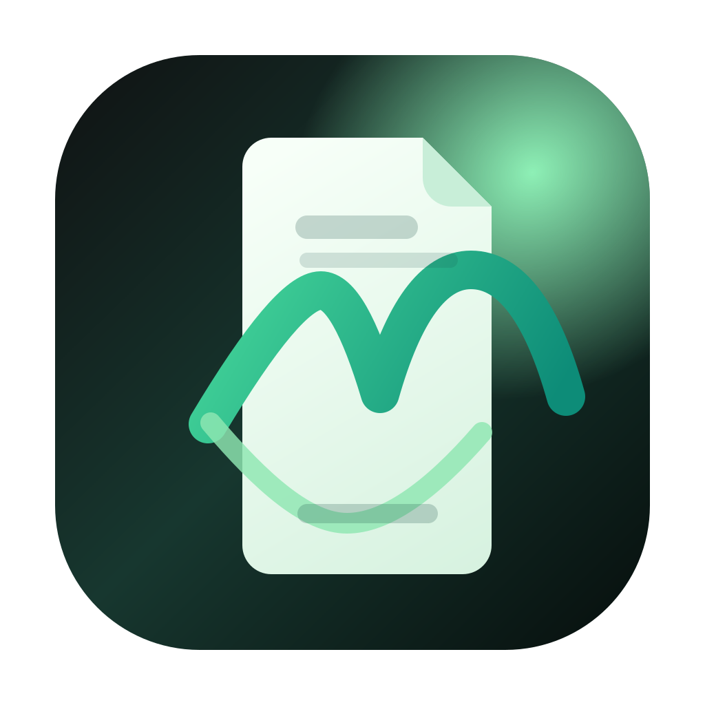

Aurora Fold
Cold neon document icon with code brackets and a bright slash. Most overtly “Markdown app” of the set.
Sharp / modern / clearOpen this file in any browser to compare the directions. Each icon is a 1024px SVG, so the winner can be turned into an app icon set without redrawing from scratch.
Cold neon document icon with code brackets and a bright slash. Most overtly “Markdown app” of the set.
Sharp / modern / clear
Warmer, louder direction built around a glowing note and broadcast arcs. Feels more like a creative tool.
Warm / expressive / bold
Technical stacked-sheets concept with grid energy, hash, brackets, and a construction-plan vibe.
Technical / precise / bright
Darker, calmer direction with a ribbon-like “M” gesture across the page. Cleaner and more premium-feeling.
Minimal / premium / moody